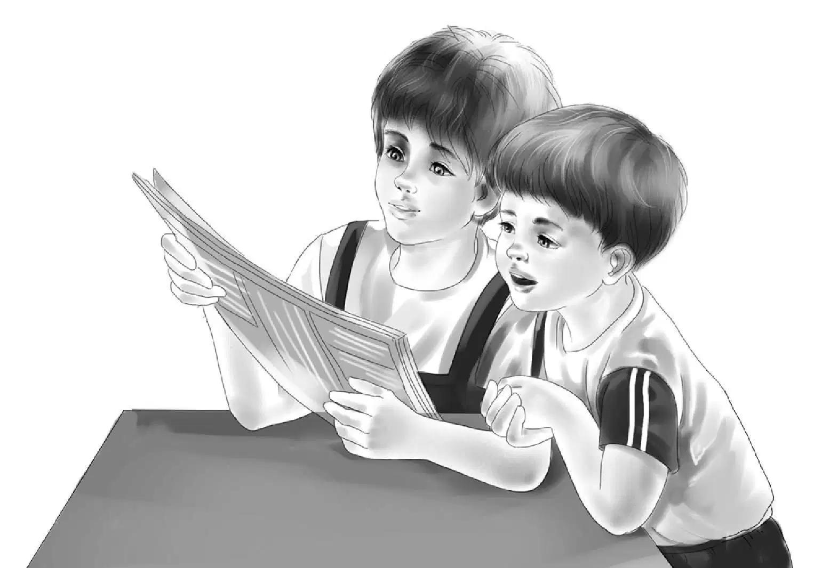
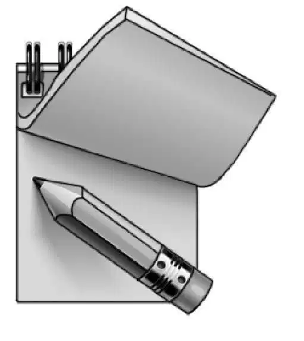
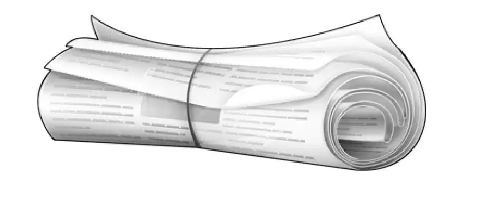
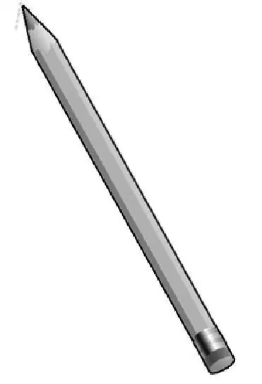
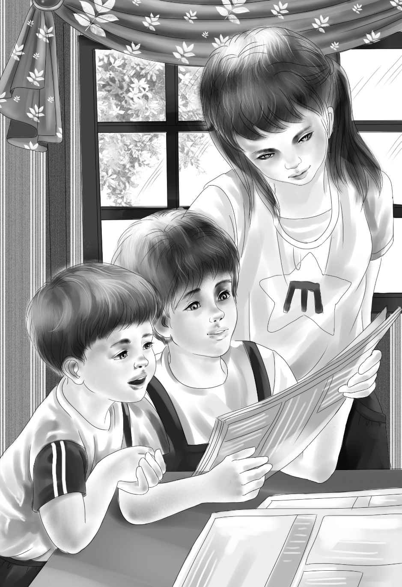

It was library day when Violet and Benny rode their bikes over to the Beaches. Jessie and Henry had made other plans and could not go, but Sammy and Jeffrey were waiting. They had notebooks and pencils.

“Follow us,” Benny called. “We know the way.”
Soon the four children were chaining their bicycles in front of the Greenfield Public Library. It was a large library for a small town.
Mrs. White was always glad to see the Aldens coming. She laughed. She said, “I know what you want,Benny. Some science books and some mystery books. And how about your new friends? Do they like mysteries? ”
“Yes, but—” Sammy and Jeffrey both began at once.Then Jeffrey went on, “We have a real mystery story already. That’s why we came.”
Then Benny told Mrs.White about the mystery room. He said, “We want to know one special thing. Why was the room closed up? ”
“What a puzzle! ” Mrs. White exclaimed. “I hope I can help you find out. I won’t promise. You are lucky to have that date, 1910. Come with me and I’ll show you what we have. You may find some clues.”
Mrs.White led the children into a room in another part of the library. “People often come to learn about past times in Greenfield.We keep everything about Greenfield history here,”she said. “We have some interesting things like old letters people have given to the library. There are old books and newspapers, too. Now let’s see. Where shall we begin?”

Violet said, “We thought maybe old copies of the Greenfield News might help us. The Carvers had that big house and were an important family.”
“A good place to begin,” Mrs. White agreed. “We have the old newspapers made into big books. Sit down at this long table and I will bring you some. You can begin with June, July, and August of 1910.”

Soon Mrs.White put the big books on the table. She looked at Sammy and asked, “Do you think you can read these newspapers? They are not easy.”
Jeffrey said,“Sammy can read anything.” And Mrs. White was surprised to find out later that this was true.
After the librarian had gone,the room was very still. The Aldens and the Beaches were busy looking at the old copies of the Greenfield News.
“Here,”Sammy whispered.“Look at this—there’s a story on the front page about this library. It was first opened on June 5,1910.”
“Here’s something about a big fire,” Benny said. “A lumberyard burned. It says it was once owned by the Carver family.I guess they were important people.”
“I’m going to look on the pages that tell about neighbors visiting and having parties,”Violet said. “I think that’s where we might see something about Willy’s grandmother.”
Jeffrey and Sammy looked through several papers but they did not find anything.
Suddenly Violet whispered,“Here! It says something about Mrs. A. M. Carver. Oh, it’s just about a meeting of church ladies. That doesn’t help us.”
The children began to feel tired. The print in the old newspapers was small and hard to read. It wasn’t as easy as they had hoped. But nobody wanted to give up.
Mrs. White looked in. “Any luck? ” she asked.
Just then Jeffrey began to breathe hard. He said, “Listen. Here it is.” Then he read a notice. It said,“Mrs.A.M.Carver is entertaining her grandson Willy for the summer. He is the son of Joseph Carver of London, England, who is in the coal mining business there. Willy will return to his parents on August first of this year.”

“Oh, good for you!” said Violet. “You found the first good clue, Jeff.”
Benny had the July papers and now he said, “Here’s a little story about Willy’s birthday party. Certainly that’s the one Mrs. McGregor remembers.”
Sammy said, “Let’s see if there is a story about Willy going home.Look in the August newspapers.”
All four children looked, trying to read as fast as they could.
It was Benny who found what they wanted. He read, “‘This week Mr. and Mrs. Joseph Carver came to Greenfield to get their son and take him back to England. They are returning to live in London permanently, taking Mrs. A. M. Carver with them. The Carver family home has been rented to Mr. and Mrs. David Johnson, who will occupy it the first of September. The Johnsons have five children.’”
“Now that’s something new!” Benny said. “Wedidn’t know anyone lived in the house between the Carvers and the first Beach family.”
“And now we have the Johnsons,” agreed Violet.
“With five kids,” added Jeffrey.
All at once Sammy said, “Now everyone keep still and let me think! I have an idea and then I lose it. Here it is again. Suppose Mrs. Carver didn’t want five strange children playing with all Willy’s toys. I’ll bet she closed up that room and hid it so that nobody would know it was there.”
Benny said slowly, “You may be right, Sammy. At least nobody ever found it until we did. I haven’t any better ideas.”
Violet said,“I don’t think we can find anything more here. Nobody would put anything about that closed room in the newspapers. It was such a secret.”
“Let’s show that nice librarian what we found,”Sammy said. “I copied it in my notebook.”
Mrs. White was glad to hear what the children had found. “Do come again,” she said. “You read very well, Sammy.”
“I’ll come again,” Sammy said. “I want a book about the moon’s surface.”
“We have many of those,” said Mrs. White with a smile. “I’ll try to pick out a hard one for you.”
Violet, Benny, Jeffrey, and Sam started home on their bikes. Sammy said, “We’ve been so excited about the mystery room that we haven’t finished the tree house.”
“We can finish it after lunch,” Jeff said.
Benny said, “You can put up the lantern and the mailbox and the rope ladder.”
Later that afternoon Sammy said,“I wish Dadand Mom would come home. I want to tell them what we found in the library.”
Jeffrey said, “I’ve been thinking about Uncle Max. He might remember something more if we told him about the Johnsons and their five children.I’d like to know if Sammy’s idea is right.”
When Mr. and Mrs. Beach came home, they found the tree house done and the backyard picked up.
“Didn’t you go to the library after all?” asked Mrs. Beach. “Come in and tell me.”
They all went into the living room and the children sat down on the floor.
“Oh, we went all right, Mom!” said Sammy. “And just listen to this.We found it in the old newspapers.” He took out his notebook and read his notes to his parents.
Mr. Beach said,“I never heard of the Johnsons.I wonder if Max has. Maybe he has forgotten them, too. Would you like to drive over there this evening after dinner and ask him?”
Jeffrey said, “Oh, Dad, that is the very thing we want most.”
Sammy was very quiet. He was thinking. All at once he exclaimed, “I have the most stupendous idea! Uncle Max could name his restaurant the Rocking Horse! We could give him the big rocking horse for children to look at. They couldn’t ride on it because it is so old. But children would want to come and so their parents would bring them, and the eating place would be a great success.”
Benny said, “That’s the best idea yet. I would want to go to a place named the Rocking Horse.”
“So would I,” said Mrs. Beach.
But Jeffrey was thinking, too. He said, “Dad, do the toys in the hidden room belong to us?”
“Yes, they do,” replied his father. “I bought the house and everything in it and the land around it. So if you want to give the toys to Uncle Max, you may. Of course Uncle Max may not like the idea.”
“I think he will, Mr. Beach,” said Benny. “He is ready to try almost anything.”
Violet said, “We have to go. It’s dinner time.”
Mrs. Beach said, “Come back later and drive to Uncle Max’s with us. It’s everybody’s mystery now.”